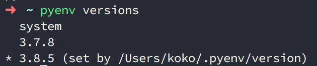
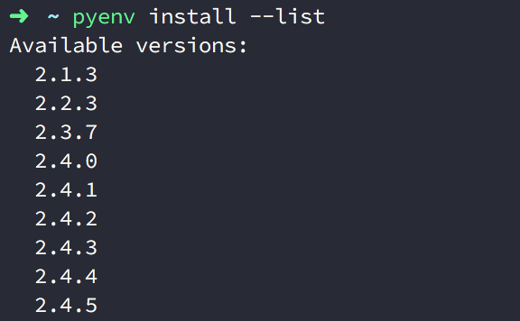
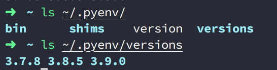
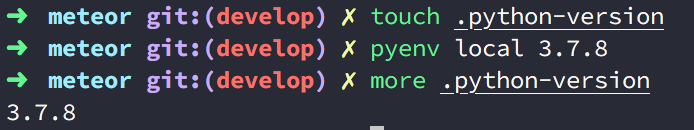
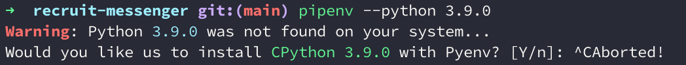

Python - 使用 Pyenv 來管理多個 Python 版本的環境
Posted on 六 06 3月 2021 in Python
前言
在 Python 的專案開發環境上，不論如何的演進總有虛擬環境 (virtual environment) 陪伴的我們，使我們能在不同的專案上切割出獨立的套件安裝環境。
然而管理 Python 版本的問題呢？在這幾年 Python 的版本從早期最受歡迎的 2.7 到 Python 3 問世，甚至不知不覺已經快速迭代到 3.9 版，因此公司可能許多專甚至仍維持在不同的 Python 版本上，有 Python 2.7 的，有 Python 3.4 的，也可能有 3.7 的。
那麼我們究竟是否有一套工具，能在一台電腦上簡單的安裝多個 Python 版本甚至方便的管理呢？那麼我一定會推薦你來瞧瞧現在知名的 pyenv 工具，因為他滿足了這些需要，甚至能跟你的專案環境綁在一起，連 Pipenv 甚至最近的 Portry 也原生支援。
在 Mac 上透過 Homebrew 安裝 pyenv
Mac 透過 Homebrew 安裝步驟：
$> brew install pyenv
初始化 Pyenv：
透過輸入以下指令，Pyenv 會提供要寫入到 .bash_profile 或 .zshrc 的設定參數：
$> pyenv init
# Load pyenv automatically by appending
# the following to ~/.zshrc:
eval "$(pyenv init -)"
例如我使用 Zsh 環境，因此開啟 ~/.zshrc，並放入此行：
eval "$(pyenv init -)"
接著在終端機啟動更新後的 .zshrc：
$> exec $SHELL
透過 eval "$(pyenv init -)" 可以為你登入系統後就自動啟用 pyenv ，並且啟動 shims 和 autocompletion 功能。
接著我們可以開始使用 pyenv
顯示目前系統安裝的 Python 版本，預設是 system ( 內建的 Python )
$> pyenv versions

列出可安裝的 Python 版本：
$> pyenv install --list

如果想要設定整個系統預設的 Python 版本的話，可以使用 pyenv global <版本號> 指令：
$> pyenv global 3.7.0
如果只是暫時切換 Python 版本的話，可以輸入 pyenv local <版本號> 指令做切換，如此就只會影響當前 Terminal Session 的 Python 版本，例如：
如果想看到目前 Session 的 Python 版本，可以透過 version 這個指令查看：
$> pyenv version
透過 pyenv 安裝的 Python 版本們去哪
藉由 pyenv 安裝的各個版本 Python 都會統一放到 PYENV_ROOT 目錄下的 versions 目錄中，在 peynv 中預設的 PYENV_ROOT 版本會在 ~/.pyenv 下：

而如果你想要修改，可以到進到你的 Bash 或是 zsh 設定檔中指定 PYENV_ROOT，並啟動更新後的設定檔：
PYENV_ROOT ~/workspace/.pyenv
此外你，也可以透過 pyenv root 這個指令了解目前的 PYENV_ROOT 指向哪裡：
$> pyenv root
指定開發專案的 Python 版本
可以在專案目錄中，建立 .python-version 檔案，並在內部輸入 Python 的版本號 （類似 nvm 的 .nvmrc 檔案：
$> echo [版本號] > .python-version
或者你也可以先建立 ，再透過 pyenv local 指令指定：
$> touch . python-version
$> pyenv local [Python 版本]

如何在 Pipenv 中指定已安裝在 Pyenv 的 Python 版本
首先你需要透過 pyenv 切換到你想要使用的 Python 版本，接著在該環境中，比如說 3.9.0，先用 pip install pipenv 把 Pipenv 安裝好，如此你才能在你想要的 Python 版本中使用 Pipenv。
接著可以使用以下 Pipenv 指令來指定你目前所在的 Python 環境：
$> pipenv --python [目前 Python 版本的環境]
然而如果你真的輸入了以下指令直接指定版本 (如 3.9.0)，你會發現 Pipenv 告訴你他找不到這個版本，並詢問你是否要安裝該 Python ：
$> pyenv global 3.9.0
$> pyenv versions
system
3.7.8
3.8.5
* 3.9.0 (set by /Users/[username]/.pyenv/version)
$> pipenv --python 3.9.0
Warning: Python 3.9.0 was not found on your system...
Would you like us to install CPython 3.9.0 with Pyenv? [Y/n]:

這是因為 Pipenv 無法識別 pyenv 所使用的 Python 版本的路徑位置 shims，因此我們不能這麼簡單的輸入版本號。
正確的方式要如下輸入這串執行變數 $(pyenv which python) 才能成功。
$> pipenv --python $(pyenv which python)
# 或是你也可以直接指定 python 執行檔在 pyenv 下的位置
$> pipenv install --python ~/.pyenv/versions/[`the version you installed`]/bin/python